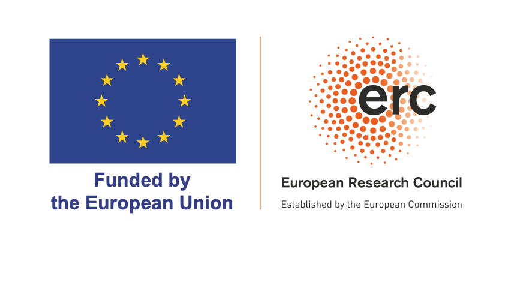

A coherent approach to analysing heterogeneity in network data (NETWORK)
ERC Consolidator Grant 101044319 (2023--2027)

The overarching goal of this project is to develop a coherent set of econometric methods to
deal with unobserved heterogeneity in the analysis of social interactions between agents.
Such heterogeneity is well recognized to be important. It is often of great interest to
document the degree of heterogeneity, evaluate its impact, and uncover the existence and
form of any complementarities that may exist between agents. With the growing availability
of network data, questions of this kind are increasingly being asked in applied work. The
development of appropriate econometric tools to answer them has, however, not followed suit.
If anything, recent theoretical work has pointed at substantial difficulties with the so
called fixed-effect approach currently serving as the workhorse tool.
This project recognizes the potential of taking a random-effect view. For settings where
agents interact in pairs, such a view has received some attention in the literature.
However, to date, it struggles with issues of identification, estimation, and computation.
We will develop a new nonparametric approach that provides a solution to each of these three
issues. We will next venture forward and extend this framework to situations where agents
interact in larger groups. Both collaborative and non-collaborative settings will be
considered, thereby covering team production, competition, and peer effects. Special
attention will be given to recovering treatment effects in the presence of social
interactions, where interference on unobservable confounders is an issue. For situations
where data limitations prevent a fully nonparametric approach, instrumental-variable methods
that build on flexible functional form restrictions will be developed.
K. Jochmans. Identification in models for matched panel data with two-sided random effects. Preprint, 2025.
A. Higgins and K. Jochmans. Inference in dynamic models for panel data using the moving block bootstrap. Preprint, 2025.
S. Bonhomme, K. Jochmans, and M. Weidner. A Neyman-orthogonalization approach to the incidental-parameter problem. Preprint, 2025.
K. Jochmans and P. Diegert. Nonparametric identification of models for dyadic data. Preprint, 2024.
K. Jochmans. Many (weak) judges in judge-leniency designs. Preprint, 2023.
K. Jochmans. Nonparametric identification and estimation of stochastic block models from many small networks. Journal of Econometrics 242, 105805.
A. Higgins and K. Jochmans. Bootstrap inference for fixed-effect models. Econometrica 92, 411-427.